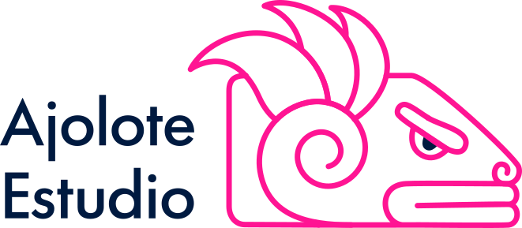

Alias: ajolote
El ajolote es un anfibio endémico de México, famoso por regenerarse y vivir en los canales de Xochimilco.
* Publicación
* Artes plásticas
* Ilustración
* Poesía
* Lectura
* Bordado y tejido
Creativa desde nacimiento, artista hasta ahora.
